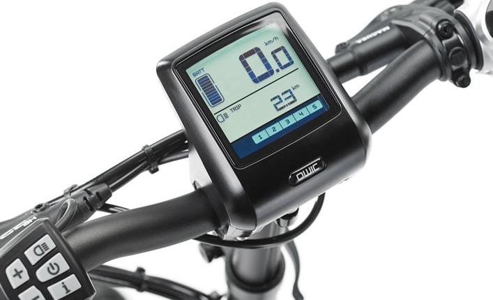

Overstappen op een e-bike
Voorwielmotor of middenmotor, welke ondersteuningsstanden, hoe ver komt u op één accu? En is een speed pedelec, met ondersteuning tot 45 km/u, iets voor uw woon-werkverkeer? Dat zoeken we samen uit, met een proefrit.